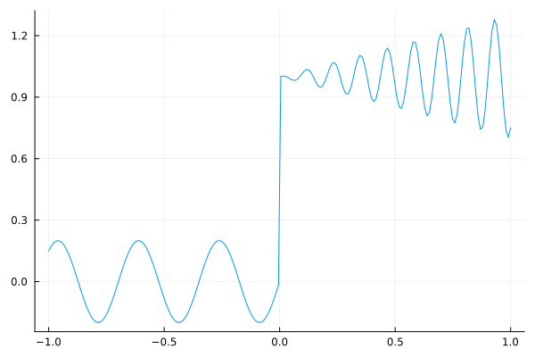
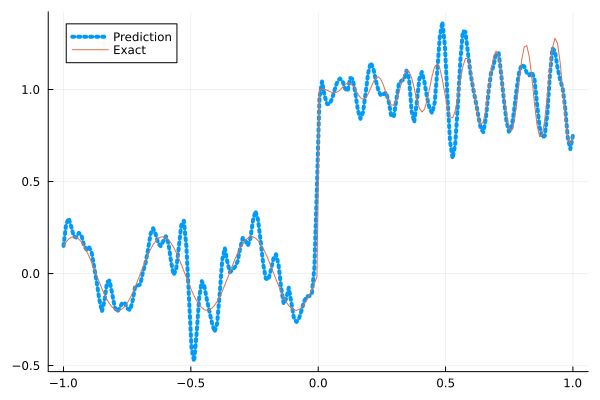
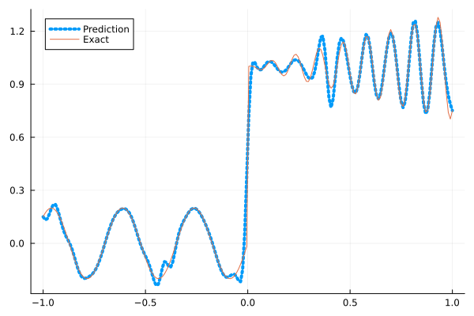
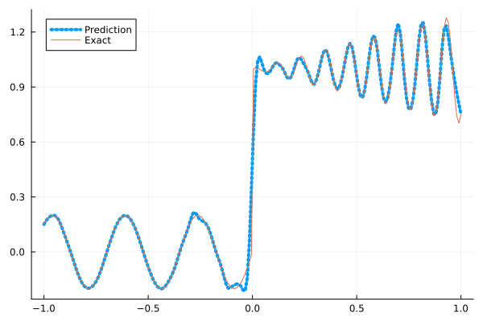
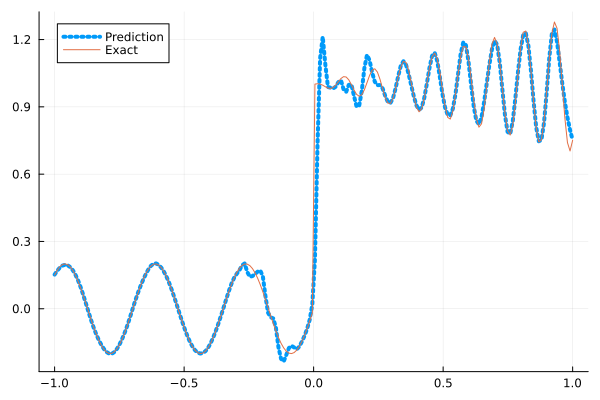

Fitting a nonlinear discontinuous function
This example is taken from here. However, we do not use adaptive activation functions. Instead, we show that using suitable non-parametric activation functions immediately performs better.
Consider the following discontinuous function with discontinuity at $x=0$:
\[u(x)= \begin{cases}0.2 \sin (18 x) & \text { if } x \leq 0 \\ 1+0.3 x \cos (54 x) & \text { otherwise }\end{cases}\]
The domain is $[-1,1]$. The number of training points used is 50.
Import pacakges
using Lux, Sophon
using NNlib, Optimisers, Plots, Random, StatsBase, ZygoteDataset
function u(x)
if x <= 0
return 0.2 * sin(18 * x)
else
return 1 + 0.3 * x * cos(54 * x)
end
end
function generate_data(n=50)
x = reshape(collect(range(-1.0f0, 1.0f0, n)), (1, n))
y = u.(x)
return (x, y)
endgenerate_data (generic function with 2 methods)Let's visualize the data.
x_train, y_train = generate_data(50)
x_test, y_test = generate_data(200)
Plots.plot(vec(x_test), vec(y_test),label=false)
Naive Neural Nets
First we demonstrate show naive fully connected neural nets could be really bad at fitting this function.
model = FullyConnected((1,50,50,50,50,1), relu)Chain(
layer_1 = Dense(1 => 50, relu), # 100 parameters
layer_2 = Dense(50 => 50, relu), # 2_550 parameters
layer_3 = Dense(50 => 50, relu), # 2_550 parameters
layer_4 = Dense(50 => 50, relu), # 2_550 parameters
layer_5 = Dense(50 => 1), # 51 parameters
) # Total: 7_801 parameters,
# plus 0 states, summarysize 80 bytes.Train the model
function train(model, x, y)
ps, st = Lux.setup(Random.default_rng(), model)
opt = Adam()
st_opt = Optimisers.setup(opt,ps)
function loss(model, ps, st, x, y)
y_pred, _ = model(x, ps, st)
mes = mean(abs2, y_pred .- y)
return mes
end
for i in 1:2000
gs = gradient(p->loss(model,p,st,x,y), ps)[1]
st_opt, ps = Optimisers.update(st_opt, ps, gs)
if i % 100 == 1 || i == 2000
println("Epoch $i || ", loss(model,ps,st,x,y))
end
end
return ps, st
endtrain (generic function with 1 method)Plot the result
@time ps, st = train(model, x_train, y_train)
y_pred = model(x_test,ps,st)[1]
Plots.plot(vec(x_test), vec(y_pred),label="Prediction",line = (:dot, 4))
Plots.plot!(vec(x_test), vec(y_test),label="Exact",legend=:topleft)Epoch 1 || 0.2875524574048411
Epoch 101 || 0.01704458133239618
Epoch 201 || 0.015174370022903245
Epoch 301 || 0.014423114943301077
Epoch 401 || 0.013763368131294204
Epoch 501 || 0.013397296387116413
Epoch 601 || 0.013149915201763783
Epoch 701 || 0.013086199776567229
Epoch 801 || 0.01304288415253979
Epoch 901 || 0.013019078536955846
Epoch 1001 || 0.012988642269818324
Epoch 1101 || 0.012972489803690061
Epoch 1201 || 0.01291356101799651
Epoch 1301 || 0.012862713648867626
Epoch 1401 || 0.012805925453557876
Epoch 1501 || 0.012241633630364821
Epoch 1601 || 0.010496883473360695
Epoch 1701 || 0.009191708392283374
Epoch 1801 || 0.008165352998413781
Epoch 1901 || 0.007935990371619383
Epoch 2000 || 0.007676320770201671
13.440894 seconds (13.13 M allocations: 1.482 GiB, 4.64% gc time, 89.91% compilation time)
Siren
We use four hidden layers with 50 neurons in each.
model = Siren(1,50,50,50,50,1; omega = 30f0)Chain(
layer_1 = Dense(1 => 50, sin), # 100 parameters
layer_2 = Dense(50 => 50, sin), # 2_550 parameters
layer_3 = Dense(50 => 50, sin), # 2_550 parameters
layer_4 = Dense(50 => 50, sin), # 2_550 parameters
layer_5 = Dense(50 => 1), # 51 parameters
) # Total: 7_801 parameters,
# plus 0 states, summarysize 88 bytes.@time ps, st = train(model, x_train, y_train)
y_pred = model(x_test,ps,st)[1]
Plots.plot(vec(x_test), vec(y_pred),label="Prediction",line = (:dot, 4))
Plots.plot!(vec(x_test), vec(y_test),label="Exact",legend=:topleft)Epoch 1 || 1.336636520127945
Epoch 101 || 0.001987093883448134
Epoch 201 || 0.00018253799483856234
Epoch 301 || 1.854282428309303e-5
Epoch 401 || 1.7041389841801631e-6
Epoch 501 || 1.0687026007522402e-7
Epoch 601 || 4.289725408171246e-9
Epoch 701 || 1.1012426284922041e-10
Epoch 801 || 3.4383325603256227e-12
Epoch 901 || 3.236705555058419e-13
Epoch 1001 || 6.626750363154867e-14
Epoch 1101 || 5.1382623130405175e-14
Epoch 1201 || 4.2264829876162794e-14
Epoch 1301 || 1.0210694168555107e-13
Epoch 1401 || 4.275856368123861e-14
Epoch 1501 || 5.3732051906866045e-14
Epoch 1601 || 4.0541520647432263e-14
Epoch 1701 || 6.933768142990104e-14
Epoch 1801 || 3.016900882670473e-14
Epoch 1901 || 3.3543713261525813e-14
Epoch 2000 || 9.558747215712222e-14
6.653027 seconds (8.15 M allocations: 1.298 GiB, 5.33% gc time, 80.06% compilation time)
As we can see the model overfits the data, and the high frequencies cannot be optimized away. We need to tunning the hyperparameter omega
model = Siren(1,50,50,50,50,1; omega = 10f0)Chain(
layer_1 = Dense(1 => 50, sin), # 100 parameters
layer_2 = Dense(50 => 50, sin), # 2_550 parameters
layer_3 = Dense(50 => 50, sin), # 2_550 parameters
layer_4 = Dense(50 => 50, sin), # 2_550 parameters
layer_5 = Dense(50 => 1), # 51 parameters
) # Total: 7_801 parameters,
# plus 0 states, summarysize 88 bytes.@time ps, st = train(model, x_train, y_train)
y_pred = model(x_test,ps,st)[1]
Plots.plot(vec(x_test), vec(y_pred),label="Prediction",line = (:dot, 4))
Plots.plot!(vec(x_test), vec(y_test),label="Exact",legend=:topleft)Epoch 1 || 0.5773398352072667
Epoch 101 || 0.006852574375764159
Epoch 201 || 0.005870830581882316
Epoch 301 || 0.005065403262302053
Epoch 401 || 0.004202556647650139
Epoch 501 || 0.0031915258845853227
Epoch 601 || 0.00220692029371982
Epoch 701 || 0.0013334973670815836
Epoch 801 || 0.0006330301996325581
Epoch 901 || 0.00027845767553286117
Epoch 1001 || 0.0001690492316206129
Epoch 1101 || 0.0001242141509410318
Epoch 1201 || 9.739782008776976e-5
Epoch 1301 || 7.917933517584711e-5
Epoch 1401 || 6.657444524728318e-5
Epoch 1501 || 5.7918468756202166e-5
Epoch 1601 || 5.195029325154269e-5
Epoch 1701 || 4.7668560468190465e-5
Epoch 1801 || 4.434547407663601e-5
Epoch 1901 || 0.00012313889704795684
Epoch 2000 || 3.908190697900163e-5
1.154734 seconds (1.15 M allocations: 892.492 MiB, 3.25% gc time)
Gaussian activation function
We can also try using a fully connected net with the gaussian activation function.
model = FullyConnected((1,50,50,50,50,1), gaussian)Chain(
layer_1 = Dense(1 => 50, gaussian), # 100 parameters
layer_2 = Dense(50 => 50, gaussian), # 2_550 parameters
layer_3 = Dense(50 => 50, gaussian), # 2_550 parameters
layer_4 = Dense(50 => 50, gaussian), # 2_550 parameters
layer_5 = Dense(50 => 1), # 51 parameters
) # Total: 7_801 parameters,
# plus 0 states, summarysize 80 bytes.@time ps, st = train(model, x_train, y_train)
y_pred = model(x_test,ps,st)[1]
Plots.plot(vec(x_test), vec(y_pred),label="Prediction",line = (:dot, 4))
Plots.plot!(vec(x_test), vec(y_test),label="Exact",legend=:topleft)Epoch 1 || 0.3192306484319301
Epoch 101 || 0.004896183571975784
Epoch 201 || 0.004125548967618764
Epoch 301 || 0.002898610921448632
Epoch 401 || 0.000420324091905107
Epoch 501 || 1.3552758934822146e-5
Epoch 601 || 2.2901027589227217e-8
Epoch 701 || 3.5535350530481225e-10
Epoch 801 || 1.1588024096488727e-6
Epoch 901 || 1.4049647436728167e-5
Epoch 1001 || 1.9837766935218888e-8
Epoch 1101 || 1.2356711841909912e-11
Epoch 1201 || 3.465431307980379e-7
Epoch 1301 || 2.2129373386749758e-11
Epoch 1401 || 1.0220860351952931e-12
Epoch 1501 || 1.2608690848001788e-5
Epoch 1601 || 3.502886558423684e-10
Epoch 1701 || 5.410754346844496e-13
Epoch 1801 || 8.687757121234062e-14
Epoch 1901 || 7.153645175537291e-14
Epoch 2000 || 2.8452641484439177e-13
6.562237 seconds (7.28 M allocations: 1.251 GiB, 5.38% gc time, 76.84% compilation time)
Quadratic activation function
quadratic is much cheaper to compute compared to the Gaussain activation function.
model = FullyConnected((1,50,50,50,50,1), quadratic)Chain(
layer_1 = Dense(1 => 50, quadratic), # 100 parameters
layer_2 = Dense(50 => 50, quadratic), # 2_550 parameters
layer_3 = Dense(50 => 50, quadratic), # 2_550 parameters
layer_4 = Dense(50 => 50, quadratic), # 2_550 parameters
layer_5 = Dense(50 => 1), # 51 parameters
) # Total: 7_801 parameters,
# plus 0 states, summarysize 80 bytes.@time ps, st = train(model, x_train, y_train)
y_pred = model(x_test,ps,st)[1]
Plots.plot(vec(x_test), vec(y_pred),label="Prediction",line = (:dot, 4))
Plots.plot!(vec(x_test), vec(y_test),label="Exact",legend=:topleft)Epoch 1 || 0.26181971606743354
Epoch 101 || 0.006196100417324099
Epoch 201 || 0.005384449944535079
Epoch 301 || 0.005613645165889591
Epoch 401 || 0.003471425020349088
Epoch 501 || 0.0019300486787477828
Epoch 601 || 0.0005905595860640947
Epoch 701 || 5.801869932232905e-5
Epoch 801 || 4.343345134100284e-5
Epoch 901 || 0.00017869964794097818
Epoch 1001 || 3.74766316896956e-5
Epoch 1101 || 6.0042611771119535e-6
Epoch 1201 || 5.345708182904019e-6
Epoch 1301 || 3.217830676810905e-6
Epoch 1401 || 0.00010012925447054093
Epoch 1501 || 1.655951177105297e-5
Epoch 1601 || 0.0015571120097498726
Epoch 1701 || 1.9449223112961055e-5
Epoch 1801 || 2.8994406704747413e-6
Epoch 1901 || 1.0405456826246008e-6
Epoch 2000 || 5.440609884351598e-7
5.673058 seconds (7.03 M allocations: 1.235 GiB, 4.72% gc time, 82.24% compilation time)
Conclusion
"Neural networks suppresse high frequency components" is a misinterpretation of the spectral bias. The accurate way of putting it is that the lower frequencies in the error are optimized first in the optimization process. This can be seen in Siren's example of overfitting data, where you do not have implicit regularization. The high frequency in the network will never go away because it has fitted the data perfectly.
Mainstream attributes the phenomenon that neural networks "suppress" high frequencies to gradient descent. This is not the whole picture. Initialization also plays an important role. Siren mitigats this problem by initializing larger weights in the first layer, while activation functions such as gassian have large enough gradients and sufficiently large support of the second derivative with proper hyperparameters. Please refer to Vincent Sitzmann, Julien Martel, Alexander Bergman, David Lindell, Gordon Wetzstein (2020), Sameera Ramasinghe, Simon Lucey (2021) and Sameera Ramasinghe, Lachlan MacDonald, Simon Lucey (2022) if you want to dive deeper into this.